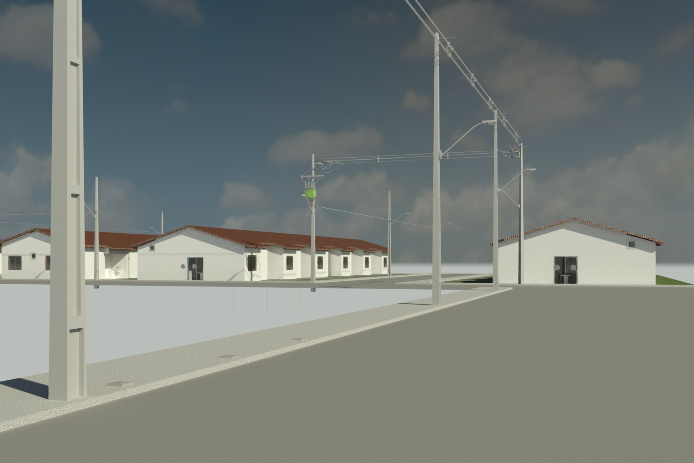
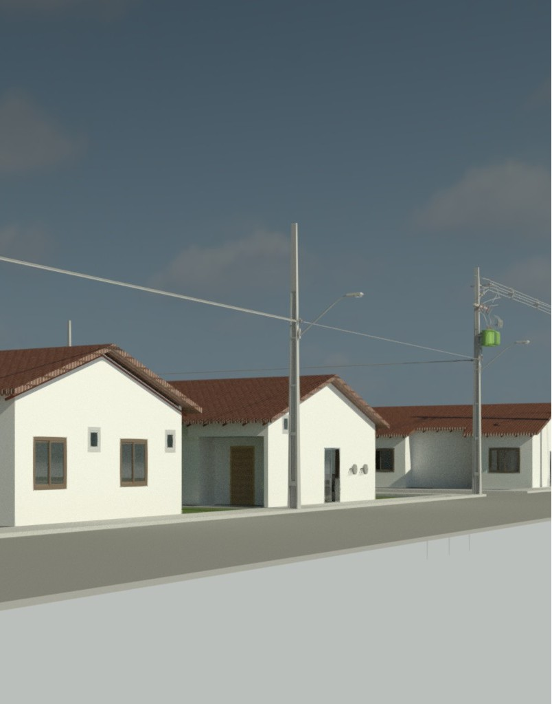
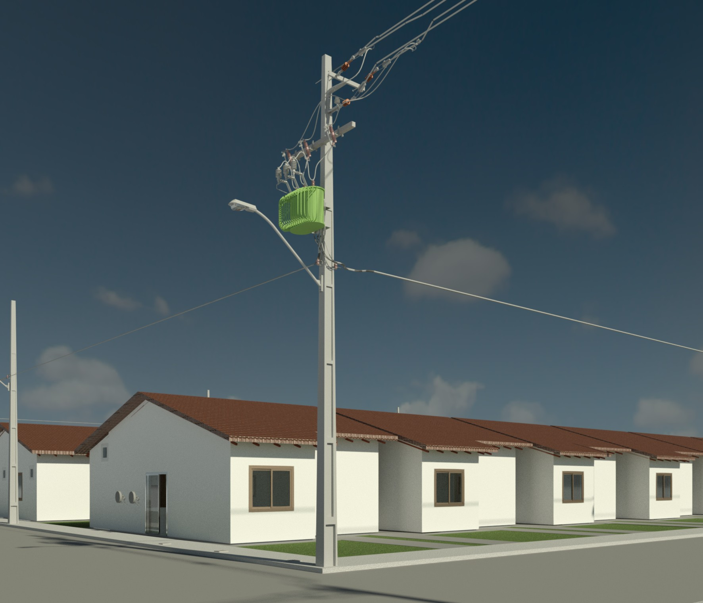
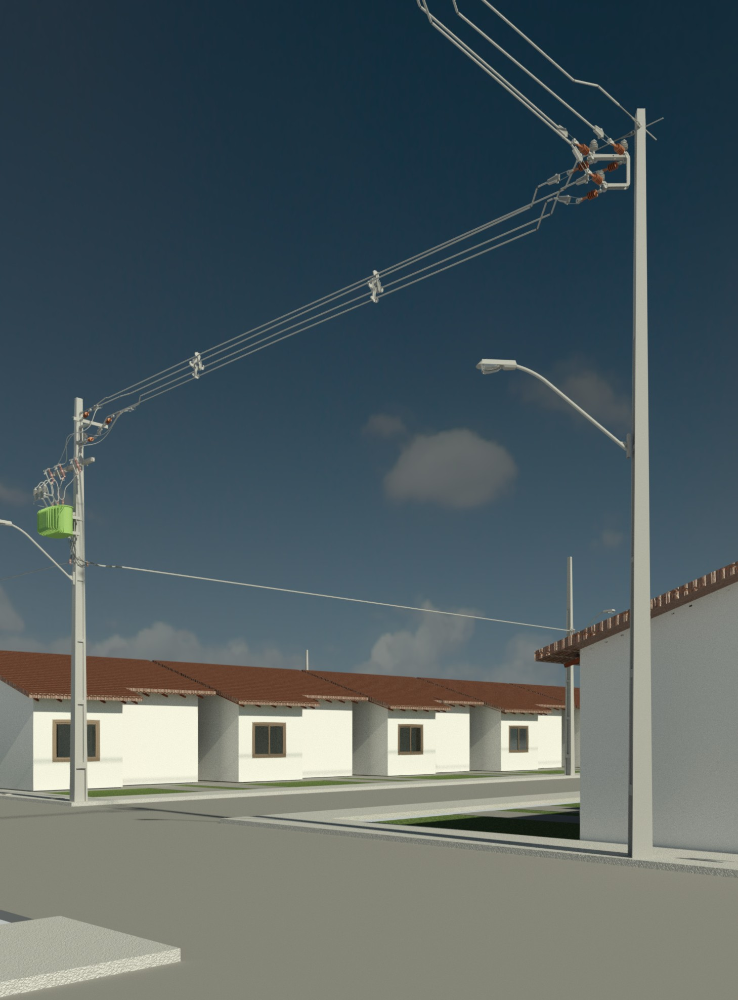
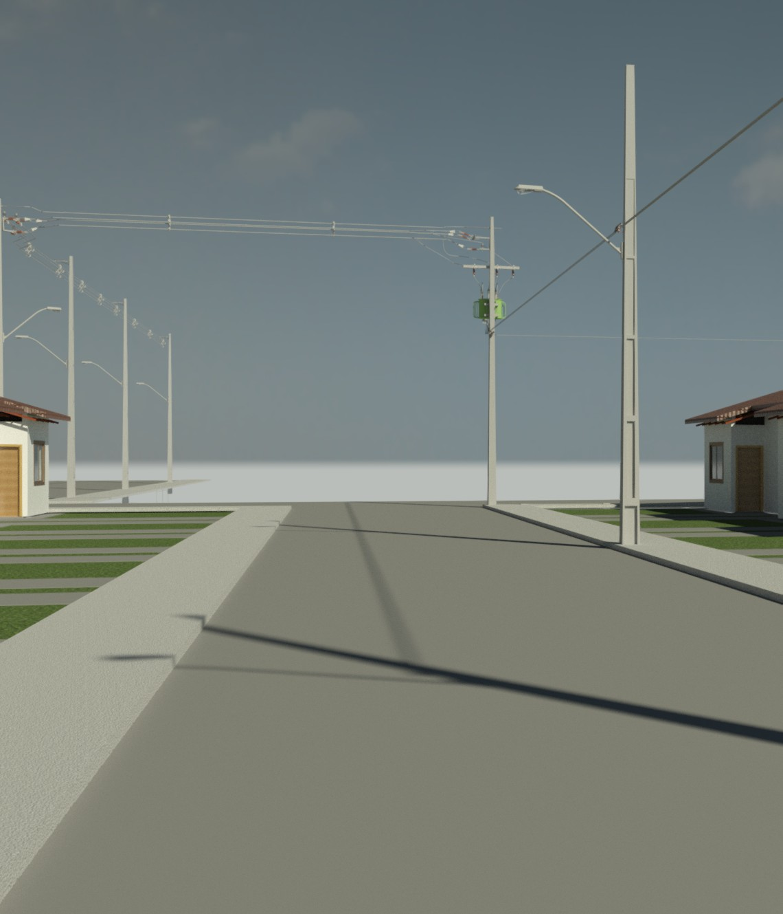

Este projeto foi desenvolvido com o objetivo de atender à implantação de uma rede de média tensão de forma eficiente, segura e em conformidade com os critérios técnicos exigidos pela concessionária de energia.
A solução contempla desde o estudo inicial de viabilidade até o detalhamento executivo, incluindo definição de traçado, posicionamento das estruturas, dimensionamento dos elementos e apresentação visual para melhor compreensão do projeto.
O uso de modelagem tridimensional e vistas técnicas permite antecipar interferências, reduzir riscos na execução e facilitar a comunicação entre projetista, cliente e equipe de campo.

Esta imagem apresenta a concepção geral da rede de média tensão, evidenciando a implantação dos postes, o lançamento dos condutores e a integração da solução com o ambiente construído.
A perspectiva adotada permite uma leitura técnica mais clara do traçado da rede, dos afastamentos, da posição das estruturas e da forma como o sistema foi pensado para atender às condições de operação e segurança exigidas em projeto.
Uma apresentação visual bem construída transmite mais segurança técnica e valoriza a solução perante o cliente.

Nesta vista é possível observar com maior precisão os elementos estruturais da rede, incluindo postes, cruzetas, isoladores e disposição dos condutores ao longo do percurso.
O detalhamento contribui diretamente para a execução em campo, garantindo que todos os componentes estejam corretamente posicionados e dimensionados conforme as normas técnicas.
O nível de detalhamento técnico é essencial para garantir qualidade e segurança na implantação.

A perspectiva lateral proporciona uma leitura espacial mais completa do projeto, permitindo avaliar alturas, afastamentos e alinhamentos entre os elementos da rede.
Essa abordagem visual facilita a identificação de interferências e auxilia na tomada de decisão durante a fase de planejamento e execução.
Visualizações tridimensionais reduzem incertezas e aumentam a eficiência do projeto.

Esta imagem complementa a análise do projeto, trazendo novos ângulos e informações que reforçam a compreensão da solução adotada.
A utilização de diferentes perspectivas melhora a comunicação técnica e permite validar o projeto sob diversos pontos de vista antes da execução.
Quanto mais clara a comunicação do projeto, menor o risco na execução.

A composição final do projeto reúne todas as informações necessárias para uma visão completa da solução, consolidando o trabalho técnico desenvolvido.
Essa etapa é fundamental para apresentação ao cliente e para validação antes da execução, garantindo que todos os aspectos técnicos estejam alinhados.
Um projeto bem apresentado transmite profissionalismo e gera confiança imediata.
Integração entre solução executiva, campo e exigências da concessionária.
Renders e vistas que facilitam a compreensão do projeto pelo cliente.
Memorial, detalhamento e estrutura para apoio à aprovação e execução.
Análise de necessidade, dados de entrada e condicionantes.
Desenvolvimento da solução técnica e representação visual.
Definição executiva dos elementos e documentos do projeto.
Material técnico pronto para apresentação e apoio à execução.
Desenvolvemos projetos elétricos com foco em média tensão, subestações, SPDA, instalações e estudos de proteção.
Falar no WhatsApp